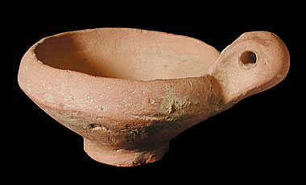

Type E
This is an unpainted and undecorated type of vessel. It was perhaps used as a lamp or a cup. Handles are not commonly found on Indus Valley pots and so this object is quite interesting. It has a very regular shape, so it was probably made on a potter's wheel. There are no traces of paint on this object, which probably means that it was never painted or decorated. |